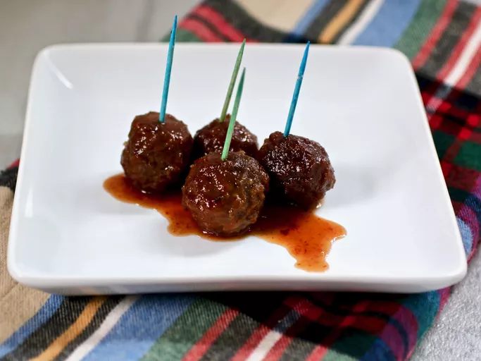

Back to Homepage
Recipe: Grape Jelly Meatballs

Image credit: My Hot Southern Mess
Both savory and easy, Grape Jelly Meatballs are a no brainer for an appetizer at your next gathering.
Ingredients:
- Jelly: 1 (32 ounce) jar of your choice of grape jelly.
- Chili sauce: 2 (12 ounce) bottles of a chili sauce that uses a tomato base, like Heinz.
- 1 pinch of cayenne pepper: (Optional).
- 1 (6 pound) bag of frozen meatballs: Nothing too large, keep them bite sized.
Instructions:
This one's simple, just three steps and you're off to the races:
- Cook the first three ingredients until nice and warm.
- Place the meatballs in a slow cooker and cover with the jelly mixture.
- Cook on low in the slow cooker for 3-4 hours.
And that's it! Serve them up with toothpicks and enjoy the sweet and savory goodness.